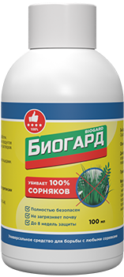
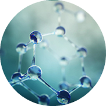
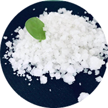
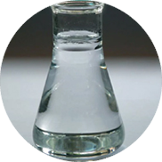

Биогард
ОРГАНИЧЕСКОЕ СРЕДСТВО
ПРОТИВ БОЛЕЕ 400 ВИДоВ СОРНЯКОВ
ПРОПОЛКА БОЛЬШЕ Не ПОТРЕБУЕТСЯ!
Специальная цена 99тнг*
Избирательно воздействует на 400 сортов сорняков
Не причиняет вреда культурным растениям
Абсолютно безопасен для человека и животных
Быстрое воздействие и высокий результат
*при заказе набора
Старая цена 9580тнг
Специальная цена 99тнг*
ДО КОНЦА АКЦИИ ОСТАЛОСЬ
Садоводы со всего Казахстана ежегодно сталкиваются с проблемами!
Более 70% семян не всходит, 60% рассады погибает в первые 3 недели после высадки
Виной тому сорная трава! Она намного сильнее ваших молодых саженцев, потому что ее корневая система созрела уже много лет назад. Сорняк забирает у саженцев все питательные вещества, а вскоре и солнечный свет. Им попросту не пробиться сквозь сор.
Большая часть вашей жизни уходит на прополку огорода

Боль в спине и порезы – ваши постоянные спутники
Вы физически не справляетесь с сорняками
Биогард - гербицид для всех видов сорняков
Биогард - уникальное средство казахской разработки для борьбы с 400 видами сорняковых растений. Вот лишь самые распространенные из них.
Пырей
Очень устойчив, размножается корневищами практически на любом типе почве. От пырея надо избавляться, особенно если планируется посадка картофеля.
Вьюнок полевой
Разветвленные корни полевого вьюнка уходят в землю на глубину до пяти метров, поэтому полностью избавиться от растения очень сложно.
Портулак огородный
Длина стебля – около 60 см, побеги одного растения могут покрыть значительную площадь огорода.
Мокрица
мокрица разрастается в сплошной зеленый ковер. От этого сорняка сильно страдают посевы моркови.
Щирица запрокинутая Семеня
сорняка не боятся механических воздействий и сохраняют способность к прорастанию на протяжении 5-40 лет.
Больше не нужно часами пропалывать огород в ущерб здоровью
Уникальная формула "Биогарда" не только убивает сорняки, но и насыщает благородные культуры полезными компонентами.
ЭТАНОВАЯ КИСЛОТА
Убивает около 400 известных сорняковых растений, лишая их возможности питаться через корневую систему.
ХЛОРИД НАТРИЯ
Обезвоживает паразитные сорняки, лишенных способности к фотосинтезу, тем самым увивая их.
ТРЁХОСНОВНАЯ КАРБОНОВАЯ КИСЛОТА
Защищает ваши растения от паразитов, которые обитают как на поверхности, так и в почве.
ПОВЕРХНОСТНО-АКТИВНОЕ ВЕЩЕСТВО (ПАВ)
Делает стенки растения твердыми, листву сочной, цветы и плоды крупными и насыщенными вкусом.
Биогард
Мнение эксперта: не стоит срывать спину прополкой
Хорошего урожая не стоит ждать, если вы не обработали почву средством от сорняков. Разумеется, вы можете не вылезать из огорода, пропалывая вновь и вновь появляющуюся траву. Но не каждый похвастается крепким здоровьем. В итоге большинство огородников получает максимум 20-30% урожая, потому что сорная трава забирает весь свет и питание, не давая полезным культурам развиваться.
Александра Григорьева, Агроном, Член Союза Агрономов РФ.
УНИКАЛЬНАЯ РАЗРАБОТКА казахских УЧЕНЫХ ИЗ НОВОСИБИРСКА
Глобальное исследование выявило около 400 видов сорняковых растений, распространенных именно в казахских широтах.
Подходит для обработки плодоносящих растений
Не вредит почве и культурным растениям
Уничтожает более 400 видов сорных трав
Абсолютно безопасен для человека и животных
Внимание!
Недобросовестные производители изготавливают химические гербициды!
Вы замечали, что под видом "натуральных", многие производители продают средства с вредными, химическим образом синтезированными веществами?
Ядохимикаты
Отлично убивают вредителей и сорняки, но неизбежно проникают в зелень и плоды. Попадая в пищу, приводят к пищевым отравлениям и инфекциям.
Инсектициды
Уничтожают большинство нассекомых, но запрещены в удобрениях на всей территории РФ. Приводят к болезни и смерти скота, домашних животных.
Пестициды
Избавляют от сорняков злаковые и овощные культуры. При вдыхании человеком ведет к болезням дыхательных путей, легких и сердца.
Напоминаем, что "Биогард" является полностью органическим препаратом и не содержит компонентов химической промышленности.
Биогард идеально подходит для удобрения растений в любых условиях и в любое время года. Для достижения великолепного результата необходимо следовать правилам:
1
Сделайте раствор из расчета 25 мл Биогарда на 3 литра воды
2
Для полива можно использовать пластиковые или железные лейки и ведра. Полив осуществляется обильно вокруг растений.
3
С помощью опрыскивателя распылите раствор на листву и цветки для опыления, усиления цветения и плодоношения.
- Полностью безопасен в использовании
- Безвреден для детей и домашних животных
- Замедляет рост сорняков
- Отпугивает вредителей
Мнения садоводов об активаторе роста Биогард
Как сделать заказ на Биогард и получить лучшее средство от сорняков уже завтра?
ЗАЯВКА
Заполняете простую форму на сайте
КОНСУЛЬТАЦИЯ
Наш менеджер проконсультирует вас и оформит заказ
ДОСТАВКА
Надежно упаковываем и отправляем ваш заказ
ПОЛУЧЕНИЕ
Вы получаете посылку и оплачиваете
Биогард
ОРГАНИЧЕСКОЕ СРЕДСТВО
ПРОТИВ БОЛЕЕ 400 ВИДоВ СОРНЯКОВ
ПРОПОЛКА БОЛЬШЕ Не ПОТРЕБУЕТСЯ!
Избирательно воздействует на 400 сортов сорняков
Не причиняет вреда культурным растениям
Абсолютно безопасен для человека и животных
Быстрое воздействие и высокий результат
*при заказе набора
Старая цена 9580тнг
Специальная цена 99тнг*
ДО КОНЦА АКЦИИ ОСТАЛОСЬ